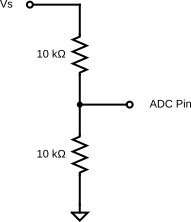

Lab 3 : DAC and ADC
Seneca College SEP600 Embedded Systems
Introduction
Documentation of the Cortex-M4 instruction set, board user's guide, and the microcontroller reference manual can be found here:
Cortex M4
FRDM-K64F
- FRDM-K64F Freedom Module User’s Guide (From nxp.com)
- Kinetis K64 Reference Manual (From nxp.com)
- FRDM-K64F mbed
FRDM-K66F
- FRDM-K66F Freedom Module User’s Guide (From nxp.com)
- Kinetis K66 Reference Manual (From nxp.com)
- FRDM-K66F mbed
Materials
- Safety glasses (PPE)
- Breadboard
- Jumper Wires
- (1x) 1kΩ-10kΩ Resistor
- (1x) Potentiometer (Optional)
Preparation
Lab Preparation Question
- Read over the lab and understand the procedures.
Procedures
Part 1: PWM Output vs DAC Output
In Part 1, we'll set up a PWM and a DAC to compare the difference between the output.
- Connect a PWM output pin to CH1 of the DSO. Refer to the mbed board pages to identify which pin is a PWM pin.
- Connect a DAC output pin to CH2 of the DSO. Refer to the mbed board pages to identify which pin is a DAC pin.
-
Upload the following code to generate a PWM and a DAC output. Remember, you'll need to replace PTXX with the PWM pin that you are using.
int main() { // setup pins PwmOut pwm(PTXX); // replace with a PWM pin AnalogOut aout(DAC0_OUT); // pwm settings pwm.period(0.02f); // 50Hz pwm, 0.02s period printf("Program started!\r\n"); // added to test serial while (true) { // loop to cycle from 0% to 100% for (float i = 0.0f; i < 1.0f; i += 0.01f) { aout = i; // set DAC out % pwm = i; // set PWM duty cycle % // delay for 10ms, 1000ms for each ramp up ThisThread::sleep_for(10ms); } // loop to cycle from 100% to 0% for (float i = 1.0f; i > 0.0f; i -= 0.01f) { aout = i; // set DAC out % pwm = i; // set PWM duty cycle % // delay for 10ms, 1000ms for each ramp down ThisThread::sleep_for(10ms); } } } -
Turn on the DSO and run the program. You should see something similar to the figure below on your DSO except it'll be a triangular wave instead of a sine wave.

Figure 3.1 DAC and PWM output
Lab Question: What circuit should you apply to the PWM output if you want to see the same waveform as the DAC output?
-
Keep the DSO connected.
Part 2: ADC Input
Next, we'll connect the ADC to an analog voltage input so it can be read into the microcontroller. The voltage signal will come from the bench power supply. To prevent damaging the ADC, we'll first use a voltage division to halve the signal. Never connect the power supply directly to the ADC without a resistor.

Figure 3.2 Voltage division circuit for ADC input
- Assemble the voltage division circuit above on your breadboard and connect the voltage divider output to an analog input pin. Vs will be provided by the bench power supply. Ensure the power supply output is OFF. Optionally, you can use a potentiometer to achieve the same.
- As a precaution, we only want to supply a maximum of 3.3V to the ADC pin, this means the power supply output should never to above 6.6V. Set the power supply output to 1V.
-
Add the following code in the main function of your code but before the while loop to set up an analog input pin. Remember, you'll need to replace PTXX with the PWM pin that you are using.
int main() { ... AnalogIn ain(PTXX); // replace with a ADC pin ... } -
Next, replace the while loop with the following code so we are controlling the DAC output and the PWM duty cycle with the analog input.
while (true) { i = ain; // read ADC aout = i; // set DAC out % pwm = i; // set PWM duty cycle % // delay for 10ms, 1000ms for each ramp up ThisThread::sleep_for(100ms); } -
Next, let's print the reading out as well. Modify your code to include the following respectively.
while (true) { ... // print the percentage, 16 bit normalized values, and something we understand printf("percentage: %3.3f%% ", ain.read() * 100.0f); printf("normalized: 0x%04X ", ain.read_u16()); printf("normalized: %3.3fV \n", ain * 3.3); // % * 3.3V ... } -
Per Minimal printf and snprintf, as of mbed OS 6, printf no longer print floating point by default to save memory. In order to enable printing of floating point value, enable it by creating a file called
mbed_app.jsonin the root project folder and add the following code to it.{ "target_overrides": { "*": { "target.printf_lib": "std" } } } -
Turn on the power supply output and run the program. You should see a constant 0.5V on the DSO, at about 15% duty cycle PWM wave, and a serial output state of about 15% and 0.5V.
Lab Question: What do you think can be done to reduce reading fluctuation? How do you think that can be achieved?